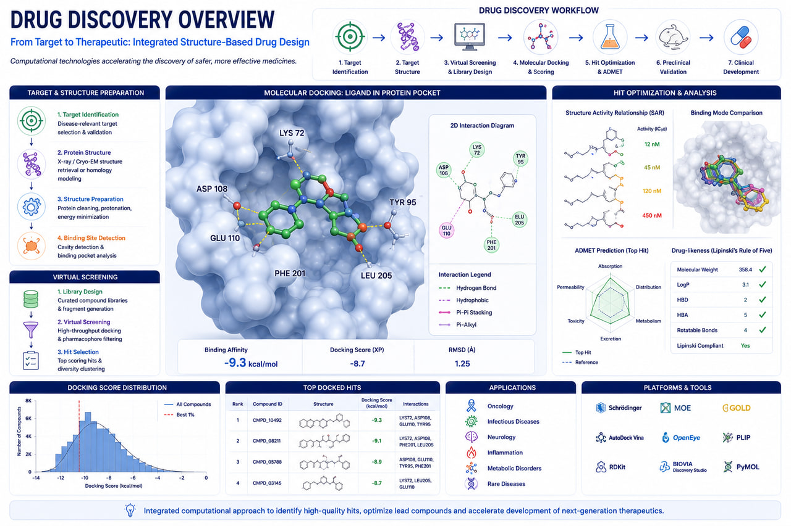

Oncology
Precision oncology, biomarker discovery, cancer target identification, and immuno-oncology research.
Computational Drug Discovery, Molecular Modeling & AI Drug Design Solutions for Pharmaceutical, Biotechnology & CRO Organizations

Accelerate therapeutic innovation through advanced computational drug discovery services including target identification, protein structure modeling, virtual screening, molecular docking, molecular dynamics simulations, AI-driven drug design, network pharmacology, and regulatory toxicology.
RASA Life Science Informatics provides end-to-end computational drug discovery solutions supporting pharmaceutical companies, biotechnology organizations, CROs, healthcare innovators, and academic research institutes worldwide — combining structural bioinformatics, cheminformatics, artificial intelligence, systems biology, and computational toxicology.
Identify biologically relevant therapeutic targets using genomics, transcriptomics, proteomics, systems biology, and AI-powered knowledge mining.
Screen large chemical libraries against target structures using structure-based and ligand-based virtual screening.
Simulate protein-ligand interactions, compute binding free energies, analyze conformational stability, and evaluate pocket dynamics.
Generate and refine protein structures for drug discovery and structural biology research.
Leverage machine learning and generative AI to design and optimize novel therapeutic candidates.
Explore biological pathways, disease networks, and multi-target therapeutic mechanisms.
Support pharmaceutical development with computational toxicology and regulatory risk assessment.
Precision oncology, biomarker discovery, cancer target identification, and immuno-oncology research.
Alzheimer’s, Parkinson’s, neuroinflammation, and neurodegenerative therapeutic discovery.
Antiviral, antibacterial, antifungal, and emerging pathogen drug discovery programs.
Immune pathway modulation and therapeutic target identification.
Diabetes, obesity, metabolic syndrome, and cardiovascular disease research.
Orphan drug discovery and genetically driven therapeutic development.
Machine learning-enabled workflows for biomarker discovery, variant prioritization, and predictive genomics.
Support for Illumina, Oxford Nanopore, PacBio HiFi, and 10x Genomics platforms.
From raw sequencing data to biological interpretation and publication-ready reports.
Deployable on AWS, Google Cloud, HPC clusters, and secure on-premise environments.
Built using Nextflow, Snakemake, Docker, and Singularity for enterprise-grade bioinformatics operations.
Get in touch with our team in Pune, India to discuss sample sizes, platform details, and custom bioinformatics pipeline configurations for your research program.
Start a Project